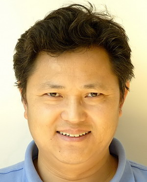
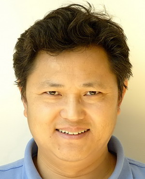
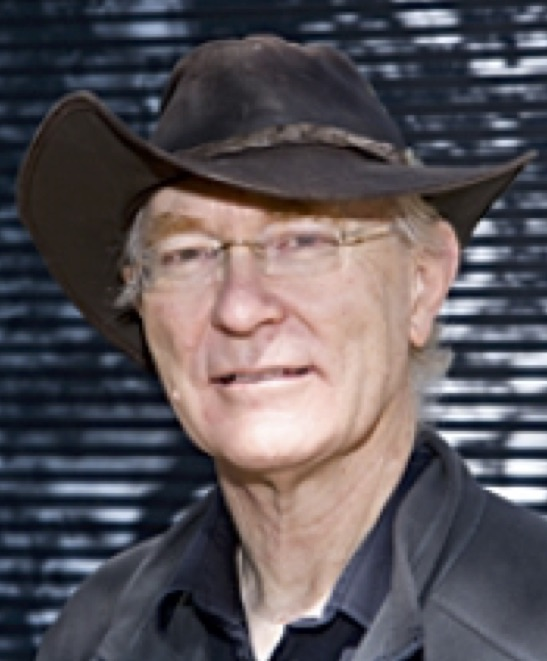
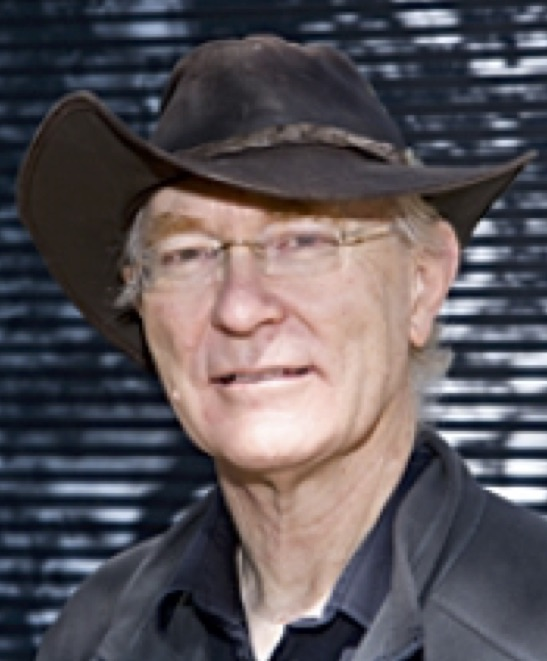

ReID and MTMCT


Dates:
Paper submission deadline: 2019 March 30
Final decisions to authors: 2019 April 12
Camera ready deadline: 2019 April 17
Navigation:
2nd Workshop on
Target Re-identification and
Multi-Target Multi-Camera Tracking
In conjunction with CVPR 2019
June 2019, Long Beach, California
The 1st MTMCT and ReID workshop was successfully held at CVPR 2017.
In the past two years, the MTMCT and REID community has been growing fast. As such, we are organizing this workshop
for a second time, aiming to gather the state-of-the-art technologies and brainstorm future directions.
We are especially welcoming ideas and contributions that embrace the relationship and future of MTMCT and ReID,
two deeply connected domains.
This workshop will encourage lively discussions on shaping future research directions for both academia and the industry.
| Start Time | Paper/Talk Title | Speaker/Author(s) |
| 8:30 | Welcome | - |
| 8:40 | Invited Talk: Re-identification of Humans and Vehicles: Something Old and Something New | Rama Chellappa (University of Maryland, College Park) |
| 9:10 | Invited Talk: Learning Adaptation from Failure for Object Identification | Ying Wu (Northwestern University) |
| 9:40 | Invited Talk: Less is more: learning to find video highlights | Kristen Grauman (Facebook AI Research) |
| 10:10 | Oral: Bag of Tricks and A Strong Baseline for Deep Person Re-identification | Hao Luo, Youzhi Gu, Xingyu Liao, Shenqi Lai, Wei Jiang |
| 10:30 | Oral: State-aware Re-identification Feature for Multi-target Multi-camera Tracking | Peng Li, Jiabin Zhang, Zheng Zhu, Yanwei Li, Lu Jiang, Guan Huang |
| 10:50 | Poster Session (Morning Break) | - |
| 11:30 | Oral: Aggregating Deep Pyramidal Representations for Person Re-Identification | Niki Martinel, Gian Luca Foresti, Christian Micheloni |
| 11:50 | Spotlights | |
| - | Masked Graph Attention Network for Person Re-identification | Liqiang Bao, Bingpeng Ma, Hong Chang, Xilin Chen |
| - | Camera-Aware Image-to-Image Translation Using Similarity Preserving StarGAN For Person Re-identification | Dahjung Chung, Edward Delp |
| - | In Defense of the Classification Loss for Person Re-Identification | Yao Zhai, Xun Guo, Yan Lu, Houqiang Li |
| - | Unsupervised Person Re-Identification with Iterative Self-Supervised Domain Adaptation | Haotian Tang, Yiru Zhao, Hongtao Lu |
| - | Multi-Scale Body-Part Mask Guided Attention for Person Re-identification | Honglong Cai, Zhiguan Wang, Jinxing Cheng |
| 12:30 | Closing Remarks | - |
Accepted papers
1. Bag of Tricks and A Strong Baseline for Deep Person Re-identification. Hao Luo (Zhejiang University)*; Youzhi Gu (Zhejiang University); Xingyu Liao (University of Science and Technology of China); Shenqi Lai (Xi'an Jiaotong University); Wei Jiang (Department of Control Science and Engineering, Zhejiang University) 2. Masked Graph Attention Network for Person Re-identification. Liqiang Bao (University of Chinese Academy of Sciences); Bingpeng MA (University of Chinese Academy of Sciences)*; Hong Chang (Chinese Academy of Sciences); Xilin Chen (Institute of Computing Technology, Chinese Academy of Sciences) 3. State-aware Re-identification Feature for Multi-target Multi-camera Tracking. Peng Li (Beijing University of Posts and Telecommunications)*; Jiabin Zhang (Institute of Automation, Chinese Academy of Sciences); Zheng Zhu (Institute of Automation, Chinese Academy of Sciences); Yanwei Li (Institute of Automation, CAS; University of Chinese Academy of Sciences); Lu Jiang (Horizon Robotics); Guan Huang (Horizon Robotics) 4. Camera-Aware Image-to-Image Translation Using Similarity Preserving StarGAN For Person Re-identification. Dahjung Chung (Purdue University)*; Edward Delp (Purdue University) 5. In Defense of the Classification Loss for Person Re-Identification. Yao Zhai (University of Science and Technology of China)*; Xun Guo (Microsoft Research Asia); Yan Lu (Microsoft Research Asia); Houqiang Li (University of Science and Technology of China) 6. Unsupervised Person Re-Identification with Iterative Self-Supervised Domain Adaptation. Haotian Tang (Shanghai Jiaotong University); Yiru Zhao (Shanghai Jiao Tong University); Hongtao Lu (Shanghai Jiao Tong University)*. 7. Aggregating Deep Pyramidal Representations for Person Re-Identification. Niki Martinel (University of Udine)*; Gian Luca Foresti (University of Udine, Italy); Christian Micheloni (University of Udine, Italy) 8. Multi-Scale Body-Part Mask Guided Attention for Person Re-identification. Honglong Cai (Suning USA R&D Center)*; Zhiguan Wang (Suning USA R&D center); Jinxing Cheng (Suning USA R&D Center)Call for papers
In target re-identification, we define a query as a bounding box of a targe-of-interest such as a pedestrian or a vehicle. We define a database as a collection of image bounding boxes of arbitrary pedestrians or vehicles. Target re-identification aims to find all the database images of the same target as the query. In multi-target multi-camera tracking, we use videos captured by multiple cameras. This task aims to place tight bounding boxes to all the targets (e.g. pedestrians). The bounding boxes are partitioned into trajectories, a set of boxes that bound a unique target, ordered by time. In this full-day workshop, we will have invited speakers, poster sessions, oral presentations, as well as a summary of the challenge. We encourage authors to explore the connections between the fields of ReID and MTMCT and some novel ideas. Examples of such questions are:- How to define and improve the scalabilityof a MTMCT or ReID system?
- How to deal with large-scale indexing and optimization in ReID and MTMCT?
- How much do initial detections influence performance in MTMCT or ReID?
- How to improve the generalization ability of a MTMCT or ReID system?
- How and which ReID descriptors can be integrated into MTMCT systems?
- What can we learn by evaluating a MTMCT system in terms of ReID (and vice-versa)?
- How can ReID and MTMCT benefit each other?
- How can MTMCT and ReID capitalize on recent large-scale datasets?
- Do semantic attributes help in matching identities in ReID and MTMCT?
Submission
To submit a new paper to the workshop, you have to do so through the CMT website. The workshop paper submissions should be in the same format as the main conference. Please refer to the CVPR 2019 author guidelines for more details.
Invited speakers
Rama Chellappa University of Maryland

Kristen Grauman Facebook
Ying Wu Northwestern University
People involved
Organizers:
 


 

Ergys Ristani (Duke University)
Liang Zheng (Australian National University)
Xiatian Zhu (Vision Semantics Limited)
Jingdong Wang (Microsoft Research)
Shiliang Zhang (Peking University)
Shaogang Gong (Queen Mary University of London)
Qi Tian (Noah Ark’s Lab, Huawei)
Carlo Tomasi (Duke University)
Richard Hartley (Australian National University)
Program committee members: Dapeng Chen, Wei-shi Zheng, Francesco Solera, Weiyao Lin, Giuseppe Lisanti, Slawomir Bak, Eyasu Zemene Mequanit, Li Zhang, Elyor Kodirov, Ying Zhang, Mang Ye, Zhedong Zheng, Zhun Zhong, Yonatan Tariku Tesfaye, Wenhan Luo, Srikrishna Karanam, Hanxiao Wang.